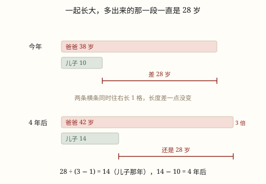

年龄问题
年龄差永远不变，倍数一直在变。把「差不变」代进差倍模型，年龄问题就回到了和差倍。
| 所属主题 | 解决问题 |
|---|---|
| 所属模块 | 数与代数 |
| 课标学段 | 第三学段（5~6年级） |
| 前置知识 | 带小括号的混合运算 |
| 核心素养 | 模型意识几何直观推理意识 |
教材定位
人民教育出版社《2024年版》
对应四上第 4 单元「加法模型和乘法模型」的年龄问题（差倍模型的变形）。
课标要求
| 数与代数·数量关系 | 能运用常见的数量关系解决实际问题，能合理解释结果的实际意义，逐步形成模型意识和几何直观，提高解决问题的能力。 印刷第 24 页 行为动词：运用 |
|---|
说明
爸爸今年 38 岁，儿子今年 10 岁，两人相差 28 岁。5 年后呢？爸爸 43，儿子 15，还是相差 28 岁。两个人一起长大，年龄差永远不变——这是年龄问题里唯一不变的东西，其他一切都在变（图 1）。
变的首先是倍数。今年 38 ÷ 10 = 3.8 倍，5 年后 43 ÷ 15 已经不到 3 倍，再过些年只剩 2 倍多。儿子长得「快」（他的基数小，同样长 1 岁占比更大），所以倍数会越来越小，最后趋近于 1。
什么时候爸爸正好是儿子的 3 倍？那时的关系是「爸爸 = 3 个儿子」，那么 差 = 3 个儿子 - 1 个儿子 = 2 个儿子。差是 28，所以儿子那时 28 ÷ 2 = 14 岁，14 - 10 = 4 年后。
这就是年龄问题的全部套路：差不变 → 变成差倍问题。那年小的年龄 = 年龄差 ÷ (倍数 - 1)，再用那年减去今年，就是「几年后」；反过来用今年减那年，就是「几年前」。
如果题目给的是「年龄和」呢？两人每年各长 1 岁，和每年增加 2 岁。今年和 48，4 年后就是 48 + 2 × 4 = 56。和会变，差不变，这是两句话，千万别记混：求倍数用差，求年龄和要先加上 2 × 年数。
所以年龄问题从来不是新题型，它是和差、和倍、差倍这三个老朋友穿上了一件叫「年龄」的外套。抓住「差不变」，外套一脱就认出来了。
使用场景
父子母女：爸爸今年几岁、儿子今年几岁，几年后爸爸是儿子的几倍，是这道题最经典的问法。
师生年龄：老师比学生大多少岁、今年是学生的几倍，换成校园里的两个人，结构完全一样。
兄弟姐妹：哥哥妹妹相差几岁，几年后两人的年龄和是多少，用的是「和每年增加 2」这一条。
出生年份推算：知道两个人的出生年份，用年份相减得到年龄差，再看哪一年倍数正好是整数倍。
祖孙三代：爷爷、爸爸、孩子三人的年龄关系，可以先两两配对，拆成两个年龄问题分别处理。
注意点
差不变，和会变。求倍数关系时用差，求年龄和时每年要加 2（两个人）。把「和不变」当成结论，第一步就错了。
算出来的是「那年的年龄」，不是「几年后」。28 ÷ 2 = 14 是儿子那年的岁数，还要 14 - 10 = 4 才是年数。这是最常见的「差一步」。
别把「是 3 倍」当成「多 3 倍」。「是 3 倍」表示 大 = 3 × 小，差相当于 2 个「小」；「多 3 倍」才是差相当于 3 个「小」。小学阶段题目说的都是「是几倍」。
年龄必须是整数，结果要合情理。算出儿子 −3 岁，或者爸爸 8 岁，一定是差算错、方向用反，或者倍数理解错了。
过去用减，将来用加。问「几年前」时，那年的年龄比今年小；问「几年后」时，那年的年龄比今年大。方向反了，答案会跑到另一边去。
为什么是这样

图 1：两条横条一起变长，多出来的那一段却一直是 28 岁
算理推导
把两个人的年龄画成两条从同一处出发的横条：爸爸 38 格，儿子 10 格，爸爸多出来的那 28 格就是年龄差（图 1 上一组）。
过一年，两条横条的右端同时往右长 1 格。同时长同样多，多出来的那一段长度当然一点没变——差是 28，明年是 28，二十年后还是 28。
倍数却不一样。倍数是「爸爸那条 ÷ 儿子那条」，儿子那条变长，除数变大，倍数就往下掉，从 3.8 一路往 2 靠。差是地板，倍数是指针。
倍数掉到 3 的那一年，爸爸那条正好是 3 个「儿子那么长」，多出来的就是 2 个「儿子那么长」。这 2 段合起来是 28，所以 1 段是 28 ÷ 2 = 14（图 1 下一组）。
14 是儿子那一年的年龄，不是年数。14 - 10 = 4，才是「4 年后」。这一步必须单独走，不能省。
反过来问「几年前」就把方向倒过来：如果问「几年前爸爸是儿子的 5 倍」，28 ÷ (5 - 1) = 7，儿子那年 7 岁，10 - 7 = 3 年前。公式没变，只是最后一步改成减法。
动手实验
画一张表，从今年开始一年一行，写到 20 年后：第一列爸爸年龄，第二列儿子年龄，第三列两人相差，第四列爸爸是儿子的几倍。写满二十行你会发现：第三列永远是 28，一动不动；第四列从 3.8 一路往下掉，越来越接近 1。再在表里找一找，哪一年正好是 3 倍、哪一年正好是 2 倍，和用公式算出来的对不对得上。这张表就是年龄问题的全部真相——不变量在第三列，变化量在第四列。
按场景的例题
例 1（场景：家庭与年龄） 父子年龄
爸爸今年 38 岁，儿子今年 10 岁。几年后爸爸的年龄正好是儿子的 3 倍？
解：年龄差 38 - 10 = 28 岁，永远不变。3 倍时，差相当于儿子的 3 - 1 = 2 倍，儿子那年 28 ÷ 2 = 14 岁。14 - 10 = 4。检验：4 年后爸爸 42、儿子 14，42 = 14 × 3。
答：4 年后。
例 2（场景：校园生活） 老师和学生
张老师比学生小王大 24 岁，今年张老师的年龄正好是小王的 3 倍。两人今年各多少岁？
解：差 24 岁对应 3 - 1 = 2 倍，小王 24 ÷ 2 = 12 岁，张老师 12 × 3 = 36 岁。检验：36 - 12 = 24，倍数也正好是 3。
答：小王 12 岁，张老师 36 岁。
例 3（场景：上学日常） 兄妹年龄和
哥哥今年 12 岁，妹妹今年 7 岁。几年后两人的年龄和是 29 岁？
解：今年和 12 + 7 = 19 岁，两人每年一共增加 2 岁。还差 29 - 19 = 10 岁，10 ÷ 2 = 5。检验：5 年后哥哥 17、妹妹 12，和是 29。
答：5 年后。
例 4（场景：计量与估算） 用出生年份推年龄
妈妈 1986 年出生，女儿 2012 年出生。哪一年妈妈的年龄正好是女儿的 2 倍？
解：两人相差 2012 - 1986 = 26 岁，这个差永远不变。2 倍时，差正好等于女儿的年龄，女儿 26 岁，年份是 2012 + 26 = 2038。检验：2038 年妈妈 2038 - 1986 = 52 岁，52 = 26 × 2。
答：2038 年。
常用推论
年龄差不变：年龄差 = 大年龄 - 小年龄，今年、明年、十年后都相同。
几年后：年数 = 年龄差 ÷ (倍数 - 1) - 小的现年龄。
几年前：年数 = 小的现年龄 - 年龄差 ÷ (倍数 - 1)。
那年的年龄和：那年的和 = 现在的和 + 2 × 年数（两个人各长 1 岁，和增加 2）。
倍数只会变小：当大年龄大于小年龄时，随着两人一起变老，大 ÷ 小的倍数会不断减小，逐渐靠近 1。
转化为和差倍：已知和与差用和差，已知和与倍数用和倍，已知差与倍数用差倍——年龄问题只是给这三个模型提供了一个具体场景。
易错点
错父子今年共 48 岁，问 4 年后两人共多少岁，答「还是 48 岁」。
为什么错把「差不变」错记成了「和不变」。两个人每年各长 1 岁，年龄和每年增加 2 岁。
正确48 + 2 × 4 = 56 岁。记住两句：差不动，和每年 +2。
错父子相差 28 岁，算出 28 ÷ (3 - 1) = 14，就答「14 年后爸爸是儿子的 3 倍」。
为什么错14 是儿子那一年的年龄，不是经过的年数。今年儿子已经 10 岁，只差 4 年。
正确14 - 10 = 4 年后。凡是「几年后」，都要用那年的年龄减今年的年龄。
错题目说「爸爸的年龄是儿子的 3 倍」，就把年龄差算成「3 个儿子的年龄」，用 28 ÷ 3。
为什么错「是 3 倍」表示爸爸 = 3 份、儿子 = 1 份，差是 3 - 1 = 2 份，不是 3 份。除数写成 3，是把「倍数」直接当成了「份数差」。
正确28 ÷ (3 - 1) = 14。倍数减 1 才是差对应的份数。
错问「几年前爸爸的年龄是儿子的 5 倍」，算完 28 ÷ 4 = 7，答「7 年后」。
为什么错那年的年龄 7 岁比今年的 10 岁小，说明事情发生在过去，方向用反了。
正确10 - 7 = 3 年前。判断方向的办法：那年的年龄比今年小就是「前」，比今年大就是「后」。
直观理解
两个人站在同一部向上运行的自动扶梯上，一起升高，两人之间的台阶数一级都没变。变的只是「高的那个比矮的高几倍」——矮的那个基数小，同样的 1 岁加在他身上占的比例更大，所以倍数被一点点「追小」了。差是脚下的台阶，一直不动；倍数是指针，一直在转。抓住脚下那条不动的差，题目就只剩下一个差倍问题。
年龄差，永不改；倍数变，画线段；先求那年小年龄，再减今年得年数。